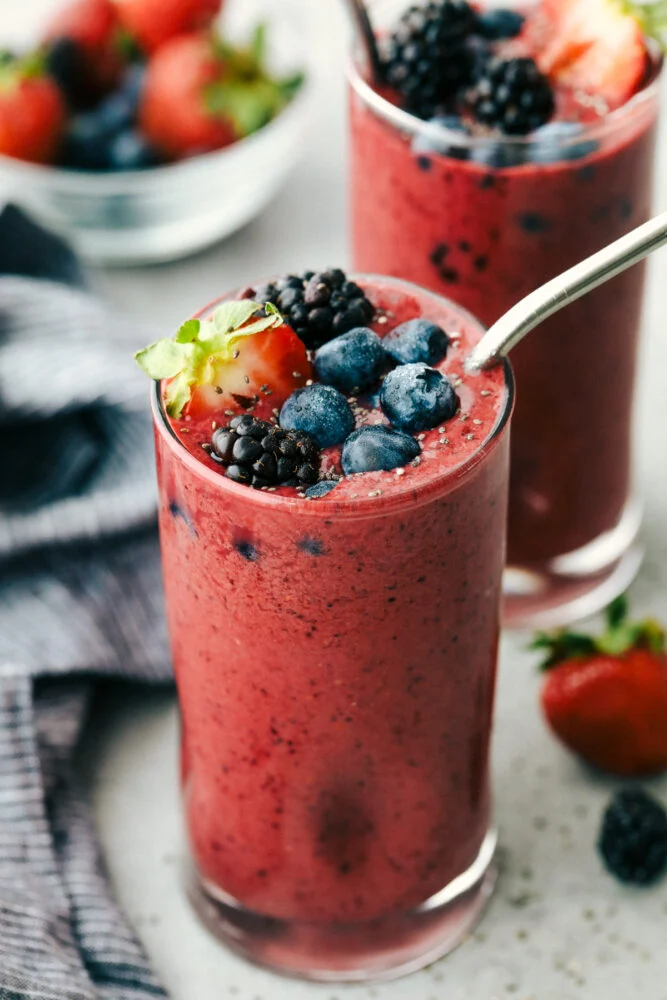

Biryani
Ingredients:
- Basmati rice - 2 cups
- Chicken or mutton - 500g
- Onion - 1 large, thinly sliced
- Yogurt - 1/2 cup
- Garam masala - 2 teaspoons
- Saffron - a pinch (soaked in warm water)
- Garlic - 3 cloves, minced
- Ginger - 1 inch, minced
- Coriander leaves - for garnish
Instructions:
- Fry the onions until golden and set aside.
- Marinate the chicken or mutton with yogurt, garam masala, garlic, ginger, and salt for 30 minutes.
- Cook the rice in boiling water with a pinch of saffron. Drain when done.
- Layer the marinated meat with rice in a large pot. Garnish with fried onions and coriander leaves.
- Cover and cook for 20-30 minutes on low heat until the meat is tender.
Recipe Rating
⭐️⭐️⭐️⭐️⭐️
Dolma (Stuffed Grape Leaves)

Ingredients:
- Grape leaves - 1 jar, drained
- Rice - 1 cup
- Onion - 1 small, finely chopped
- Dill - 2 tablespoons
- Pine nuts - 1/4 cup
- Ground beef (optional) - 250g
- Olive oil - 2 tablespoons
Instructions:
- Soften the grape leaves in warm water.
- Sauté onions and pine nuts in olive oil, then add the rice and beef (if using), and cook for 5 minutes.
- Roll the mixture in the grape leaves tightly, then cook them in a pot with water and a drizzle of olive oil for 30 minutes.
Recipe Rating
⭐️⭐️⭐️⭐️
Pad Thai
Ingredients:
- Rice noodles - 200g
- Shrimp - 200g
- Eggs - 2, beaten
- Peanuts - 1/4 cup, chopped
- Fish sauce - 2 tablespoons
- Sugar - 1 tablespoon
- Garlic - 2 cloves, minced
- Spring onions - 2, chopped
- Lime - 1, cut into wedges
- Coriander leaves for garnish
Instructions:
- Soak the rice noodles in warm water until soft, then drain and set aside.
- Heat some oil in a pan and sauté garlic until fragrant. Add the shrimp and cook until pink.
- Add the beaten eggs and scramble. Once cooked, add the rice noodles, fish sauce, sugar, and mix well.
- Top with peanuts, spring onions, and coriander leaves. Serve with lime wedges for an extra burst of flavor.
Recipe Rating
⭐️⭐️⭐️
Borek

Ingredients:
- Phyllo dough - 1 pack
- Minced beef - 500g
- Onions - 1 large, finely chopped
- Cheese (optional) - 200g
- Olive oil - 2 tablespoons
- Spices (black pepper, paprika) - to taste
- Egg (for egg wash) - 1
Instructions:
- Heat the olive oil in a pan and sauté the onions until golden.
- Add the minced beef and cook until browned. Season with salt, black pepper, and paprika.
- Layer the phyllo dough on a baking sheet and spread the beef mixture evenly over it.
- Roll up the dough and brush with an egg wash (whisked egg). Bake at 180°C (350°F) for 30 minutes or until golden brown.
Recipe Rating
⭐️⭐️⭐️⭐️
Chicken Stir Fry

Ingredients:
- Chicken breast - 500g, sliced thinly
- Bell peppers - 2, sliced
- Onions - 1 large, sliced
- Soy sauce - 2 tablespoons
- Garlic - 2 cloves, minced
- Sesame oil - 1 tablespoon
- Ginger - 1 inch, grated
- Spring onions (for garnish) - 2, chopped
Instructions:
- Heat sesame oil in a wok or frying pan. Add garlic and ginger, sauté for 30 seconds. -
- Add chicken and cook until browned. Add the bell peppers and onions, stir-fry for another 5-7 minutes.
- Pour in soy sauce and cook for another 2 minutes. Garnish with spring onions before serving.
Recipe Rating
⭐️⭐️⭐️⭐️⭐️
Tropical Fruit Tart

Ingredients:
- Tart dough - 1 package (store-bought or homemade)
- Heavy cream - 200 ml
- Mascarpone cheese - 250g
- Mango - 1, sliced
- Kiwi - 2, sliced
- Pineapple - 1 cup, diced
- Passion fruit - 1 (for topping)
Instructions:
- Bake the tart shell according to the package instructions and let it cool.
- Whip the heavy cream and mix it with mascarpone cheese until smooth. Fill the tart with the cream mixture.
- Arrange the tropical fruits (mango, kiwi, pineapple) on top. Drizzle with passion fruit pulp before serving.
Recipe Rating
⭐️⭐️⭐️⭐️
Mixed Berry Juice
Ingredients:
- Sponge cake - 1, cut into layers
- Fresh strawberries - 1 pint, sliced
- Whipped cream - 1 cup, sweetened
- Sugar - 1 tablespoon (for strawberries)
Instructions:
- Whip the cream with a tablespoon of sugar until stiff peaks form.
- Layer the sponge cake with whipped cream and sliced strawberries.
- Top with more cream and strawberries for garnish. Chill before serving.
Recipe Rating
⭐️⭐️⭐️⭐️
Mango Smoothie
Ingredients:
- Mango - 1, peeled and chopped
- Yogurt - 1 cup
- Honey - 1 tablespoon
- Ice cubes - 1/2 cup
Instructions:
- Blend all ingredients together until smooth. Add more honey or yogurt if needed.
- Serve chilled in a glass and enjoy!
Recipe Rating
⭐️⭐️⭐️⭐️⭐️
Mixed Berry Juice

Ingredients:
- Fresh strawberries - 1 cup
- Raspberries - 1/2 cup
- Blueberries - 1/2 cup
- Fresh orange juice - 1 cup
- Honey or sugar - as desired
- Ice - as needed
Instructions:
- Wash all the berries and place them in a blender.
- Add orange juice and honey.
- Blend until smooth.
- Serve in a glass with ice.
Recipe Rating
⭐️⭐️⭐️⭐️⭐️